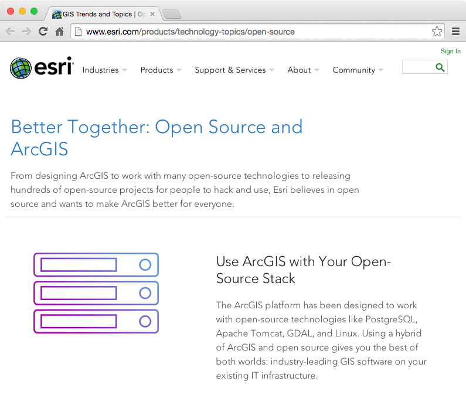
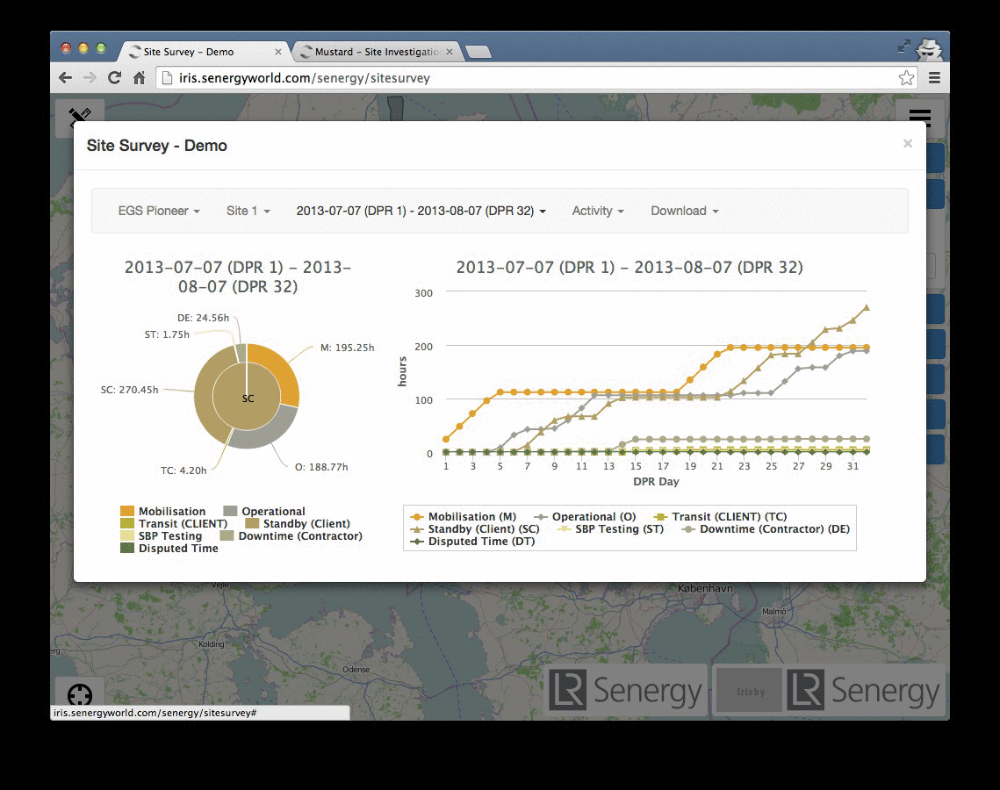
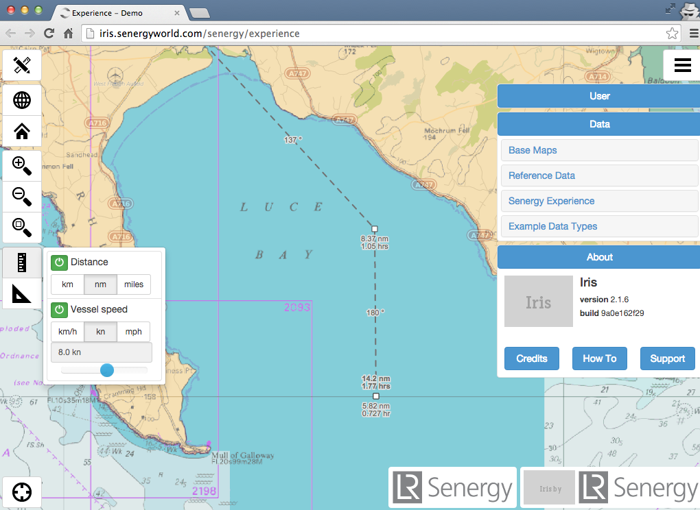
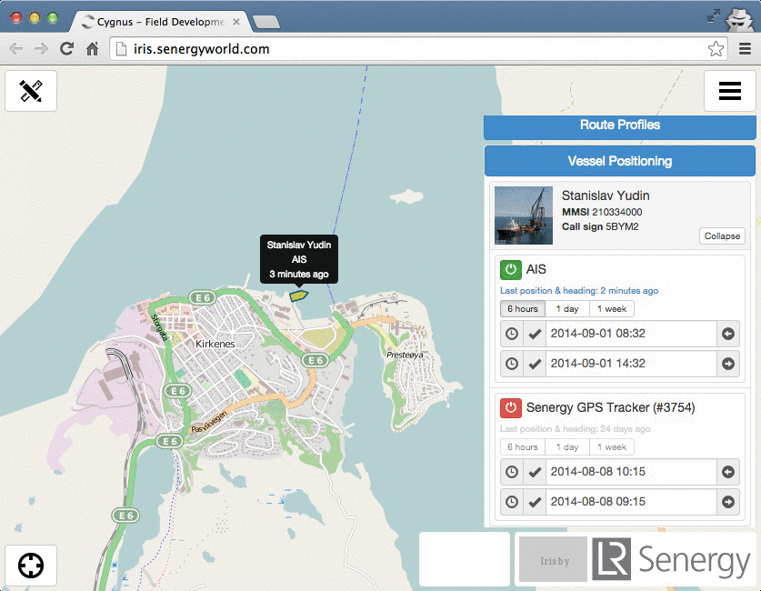
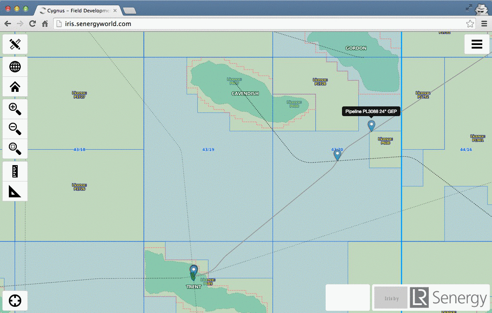
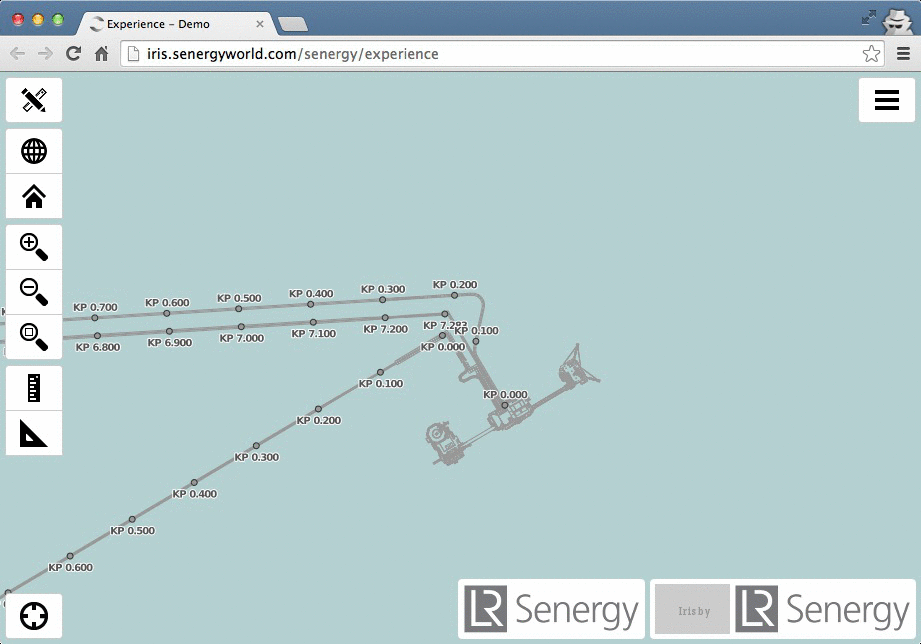

Greetings
"A dive into the hybrid geospatial stack"
about/me
Sam Franklin
GIS Manager @
@samfranklin
sam.franklin@lr-senergy.com
Why am I here
?
"I WANT ANSWERS!"
act1-what we did first
act2-what we're doing now
act3-what worked/ what failed / what's next
hybrid
licencing
hybrid is common! check out +100 open source acknowledgements in
ArcGIS
esri advocates hybrid approaches and
blogs and
blogs
no SQL database...
and
no webmap...
the gauntlet was thrown down
4 week
deadline !!!
limited options due to time-pressure and needed customisation
open source gives you access to the ingredients

the wall of terror
mentoring from

and

"If you are not embarrassed by the first version of your product, you've launched too late."
-- Reid Hoffman
Minimal Viable Product
version 2.2.0 of
'iris'
servers

+

server apps

+

Geoserver
client side frameworks are OpenLayers2 for spatial and JQuery/Bootstrap for a responsive UI
nice story GIS guy..
how does this help me again?
custom dashboards via HighchartsJS

custom measure/travel time control

multi-source realtime vessel tracking with history

too many hyperlinks = File Explorer UI

Findmaps hydrographic-chart TMS, Esri Ocean Basemap, Google-Hybrid, BGS
custom rolled marine infrastructure and licencing TMS
...using tilemill // mapnik xml // mapproxy = sweet.
Tiled CAD?

web mercator = distortion!
=knowledge management
insert projects database
insert survey database
insert arcmap connection dialog
enterprise postgreSQL
1-master
2-slaves
and replicate
shell-based database loading with
WFS+
ogr2ogr or
wget+
7zip+
pgsql2shp= easy life
Fledermaus +
gdal survey grid processing
insert survey grid img
arcpy SSDM validation
arcmap map production
inkscape neaten up
ground model development

pitfalls

"hey buddy
...gotta
nail?"
git!? push!? pull!?
...WTF?
breathe...
and finally...
act1 = agile
act2 = hybrid solutions in action
act 3 = avoid pitfalls by adopting process
"Do what you can, with what you have, where you are"
Theodore Roosevelt